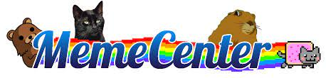
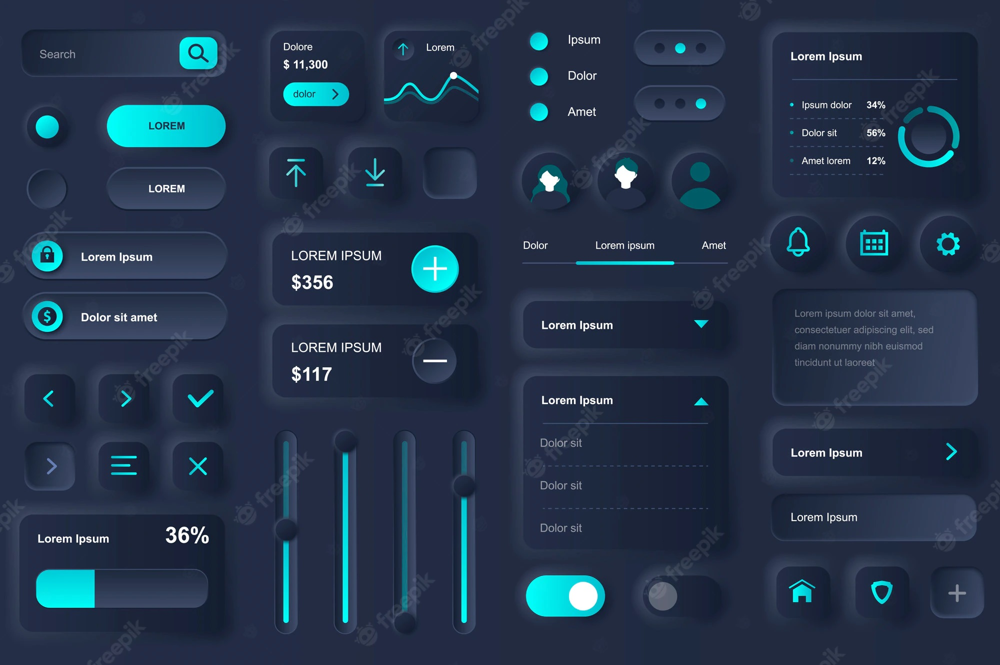
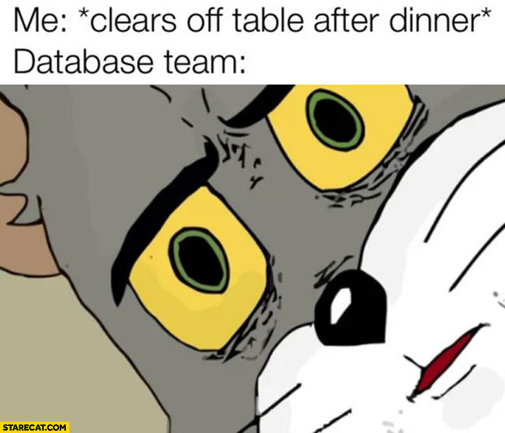
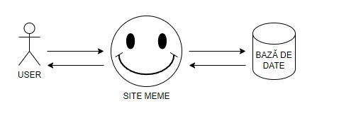
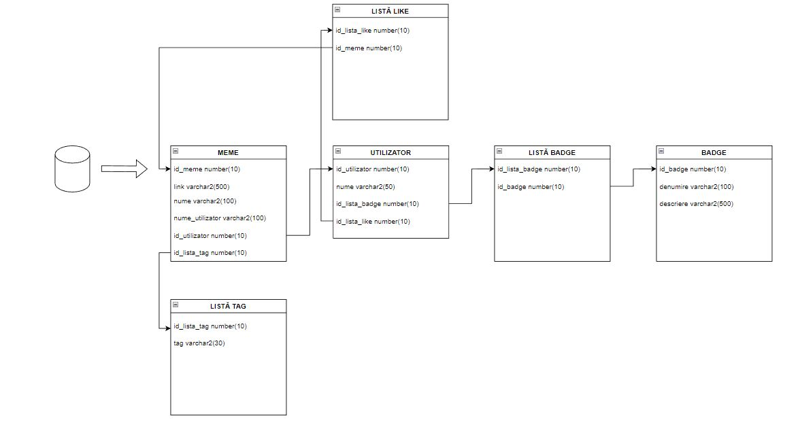
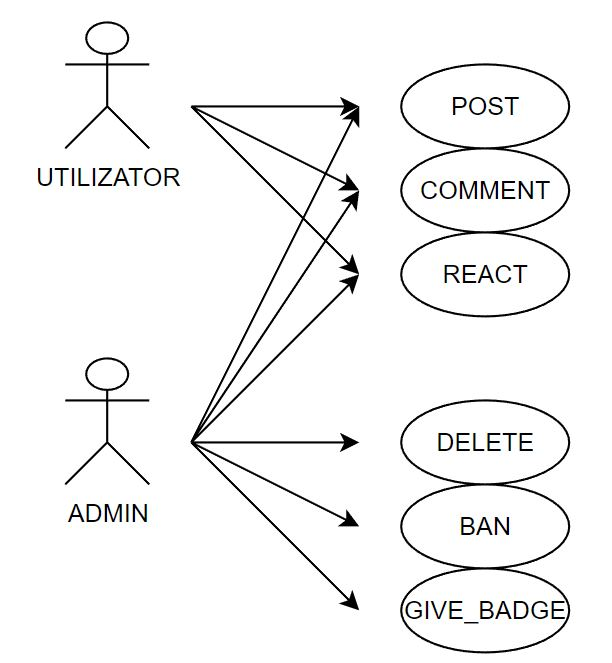

Site logare
Site logare
PREZENTAREA IDEII SITE-ULUI WEB :
-Am ales sa fac un site care să găzduiască imagini și videoclipuri, meme-uri.
-Imaginile și videoclipurile nu vor fi salvate ci doar link-uri către ele.
-Utilizatorii vor putea să posteze pe site, iar administratorii au dreptul de a șterge conținut.



-Site-uri similare după care m-am inspirat sunt reddit, memecenter, 9gag, pinterest etc..
-Majoritatea functionează într-un mod similar cu cel al site-ului pe care vreau să îl fac.
-Pinterest, de exemplu, permite și încărcare a unei imagini sau al unui videoclip, dar și încărcarea unui link către resursa respectivă.
-Chiar dacă pare ciudată, limitarea încărcărilor la link-uri îmi va permite să stochez multe informații fără să îmi fac griji pentru spațiul de stocare.
-Cum este normal pentru o pagină de meme-uri, voi implementa și o secțiune de comentarii pentru fiecare postare.
-Chiar dacă pare ciudat să memorez doar link-ul, folosind php voi putea extrage conținutul dorit de pe pagina respectivă și voi afișa pe pagina mea poza sau videoclipul.
-De exemplu, dacă vreau să permit utilizatorului să dea share unei postări de pe pinterest pe pagina mea.
-Dacă este link la o poză/videoclip fără site, va fi și mai ușor.
-Fiecare utilizator va avea un profil, asta dacă vrea să fie autentificat.
-Avantajele autentificării vor fi posibilitatea de a scrie comentarii, de a reacționa la postări și de a posta.
-Pentru a refolosi codul, statusul de moderator, utilizator, persoană cu anumite restricții și privilegii va fi facută prin verificarea medaliilor/statusurilor/titlurilor pe care le au.
-De exemplu:
*Un moderator va avea statusul "moderator" și o medalie aferentă.
*Un utilizator care a postat cea mai populară imagine luna aceasta va avea o medalie pentru realizarea sa.
*Un utilizator care nu are voie să scrie comentarii/posteze va avea statusul "Jail" și o "medalie" care reprezintă o închisoare.
-Un sistem asemănător a fost folosit pe memecenter unde primeai medalii pentru realizările tale.
-În funcție de situație, contul unui utilizator poate fi șters odată cu postările lui.

-Fiind un site de meme-uri voi vrea să aibă o pagin principală în care să fie încărcate cele mai populare meme-uri din perioada respectivă.
-Utilizatorul va avea acces la toată arhiva de poze/videoclipuri indiferent dacă este logat sau nu.
-Un utilizator logat va putea să intre într-o pagină cu toate meme-urile la care a reacționat, exact ca playlistul de liked videos de pe youtube.
-Pentru a putea fi găsite și clasificate ușor, postările vor avea taguri.

-Pentru stocarea informațiilor voi fi nevoit să folosesc o bază de date.
-Aceasta va fi structurată în așa fel încât să permită stocarea informațiilor despre postări, utilizatori și orice altceva va mai trebui adăugat ulterior.
O astfel de bază de date va arăta în acest fel:


